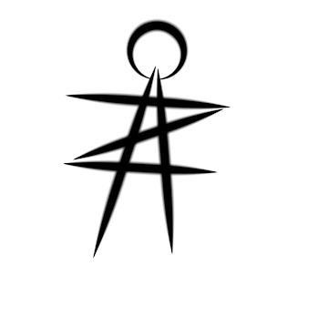

01
Tentang Saya
Saya adalah lulusan Informatika Universitas Mulawarman dengan keahlian di bidang IT, terutama Internet of Things dan pengembangan website. Saya senang terlibat dalam proyek praktis dan terus belajar untuk mengasah keterampilan.
Aktif, disiplin, dan konsisten — saya juga menjaga keseimbangan hidup dengan rutinitas gym, membaca, dan belajar mandiri.

Alvianus Nestha
Website Developer & IOT
LokasiKutai Barat, Kalimantan Timur
Emailalvianusn@gmail.com
Telepon+62 852-5079-7533
LinkedInalvianus-nestha
GitHub@alvianzi
02
Pengalaman Kerja
Okt 2022 — Mei 2023
Magang — Pengembang Perangkat IoT
PT Habibie Garden
- Mengembangkan perangkat IoT berbasis Arduino untuk proyek peternakan ayam cerdas (smart farm).
- Membangun sistem otomatisasi monitoring sensor kelembapan, suhu, dan amonia.
- Berkolaborasi dengan tim merancang solusi teknis dan menguji perangkat agar berjalan sesuai spesifikasi.
Sep 2024 — Jan 2025
Pengembang Website
Kampung Juaq Asa
- Mengelola dan memelihara situs web desa, termasuk memperbarui konten dan informasi kegiatan.
- Bertanggung jawab atas optimisasi mesin pencari (SEO) dan visibilitas situs di berbagai platform.
- Membantu pengembangan sistem backend sederhana untuk interaksi warga dengan administrasi desa secara digital.
Mar 2025 — Mei 2025
Desain Grafis
Editor Konten Media Sosial (Klien)
- Merencanakan dan membuat konten harian untuk akun media sosial klien.
- Mengelola tugas administratif termasuk penginputan data dan dokumentasi.
- Melakukan monitoring dan evaluasi terhadap konten yang telah dipublikasikan.
Jul 2025 — Sekarang
Sekretaris Adat
Kampung Juaq Asa
- Mengonversi dokumen fisik (surat keputusan, notulensi, peraturan adat) ke format digital.
- Menyusun dan mengelola arsip melalui sistem komputer agar lebih aman dan terstruktur.
- Menyiapkan laporan kegiatan adat dalam bentuk dokumen elektronik dan presentasi.
03
Keahlian
Pengembangan Web
PHPLaravelHTMLCSS
Internet of Things
PythonArduinoSensor Monitoring
Desain Grafis
PhotoshopPremiereCanvaCapCutFilmora
Perangkat & Kolaborasi
Microsoft WordExcelPowerPoint
Manajemen & Komunikasi
Manajemen Media SosialPresentasiKomunikasi
04
Pencapaian & Sertifikasi
Juli 2020
Juara 2 — Karya Tulis Ilmiah
Lomba Karya Tulis Ilmiah Tingkat Nasional "Pesut Polnes" Jilid III.
Jul — Sep 2021
Java Foundation & Programming
Program Fresh Graduate Academy, Digital Talent Scholarship — 180 jam pelatihan.
Agu — Okt 2025
Intermediate Junior Web Developer
Program pelatihan Digital Talent Scholarship untuk Junior Web Developer.
05
Galeri Sertifikat
Dokumen asli dari setiap pelatihan dan penghargaan — klik untuk membuka berkas PDF lengkap.

PDFJuara 2 — Karya Tulis Ilmiah Nasional
Lihat sertifikat asli →
PDF
Pelatihan Mahasiswa MBKM — Digitalisasi Kandang Ayam Pintar (IoT)
Lihat sertifikat asli →
PDF
Pelatihan Digitalisasi Kandang Ayam Pintar Berbasis IoT
Lihat sertifikat asli →
PDF
Konsep Pemrograman — Micro Skill
Lihat sertifikat asli →
PDF
Fundamental Junior Web Developer
Lihat sertifikat asli →
PDF
Intermediate Junior Web Developer
Lihat sertifikat asli →
06
Aktivitas Organisasi
2020 — 2021
DPM FKTIF — Divisi Multimedia
Membuat konten visual dan digital untuk acara fakultas serta mengelola publikasi kegiatan kampus.
2021 — 2022
Keluarga Mahasiswa Katolik (KMK)
Anggota tim multimedia; mengelola desain, video, dan koordinasi acara sosial komunitas.
2023 — Sekarang
Sekretaris Karang Taruna Kampung Juaq Asa
Menyusun agenda rapat, mengelola arsip organisasi, dan mengorganisir program pemberdayaan pemuda.
2024 — 2025
Agen Statistik Kampung Juaq Asa
Mengumpulkan data statistik desa bersama BPS dan menjembatani masyarakat dengan pemerintah.
07
Pendidikan
Agustus 2019 — Februari 2024
Universitas Mulawarman, Samarinda
Fakultas Teknik, Jurusan Informatika — Lulus dengan predikat "Dengan Pujian".
3.67
IPK / 4.00